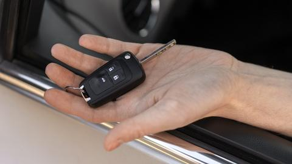
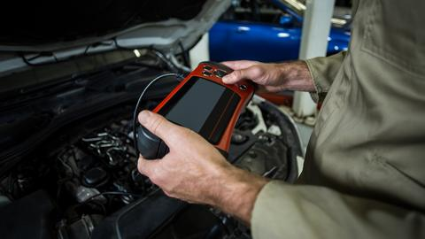

Usługi
Usługi ślusarskie i samochodowe w Kielcach
Usługi ślusarskie i samochodowe w Kielcach i okolicy u jednego fachowca: awaryjne otwieranie aut, mieszkań, domów i garaży, kluczyki samochodowe – od zapasowego po nowy, gdy nie został żaden – immobilizery, sterowniki, filtry DPF oraz kodowanie Forda i Mazdy. Wybierz usługę poniżej albo sprawdź w tabeli, która pasuje do Twojej sytuacji.

Otwieranie samochodów
Kluczyki zamknięte w kabinie lub bagażniku, rozładowany akumulator, zamek, który nie reaguje – otwieramy auto całą dobę.
Szczegóły
Dorabianie i kodowanie kluczy
Zapasowy kluczyk z chipem, pilot, keyless – dorabiamy i kodujemy, a zgubione kluczyki usuwamy z pamięci auta.
Szczegóły
Utrata wszystkich kluczyków
Nie został żaden kluczyk? Otwieramy auto, przygotowujemy i kodujemy nowy, a zgubiony usuwamy z pamięci.
Szczegóły
Otwieranie mieszkań i domów
Zatrzaśnięte drzwi, klucz w zamku od środka, zgubione klucze – otwieramy mieszkania, domy, garaże i bramy.
Szczegóły
Sterowniki i immobilizery
Auto nie odpala lub nie widzi kluczyka – naprawa i wymiana sterownika silnika, prace przy immobilizerze.
Szczegóły
Filtry DPF
Kontrolka DPF, spadek mocy, tryb awaryjny – diagnostyka, wymuszona regeneracja i czyszczenie, bez wycinania filtrów.
Szczegóły
Ford i Mazda – kodowanie
Język polski w aucie, tylne światło przeciwmgłowe, aktywacja i wyłączanie funkcji w Fordzie i Maździe.
SzczegółyJak wybrać właściwą usługę
Nie musisz wiedzieć, jak fachowo nazywa się usługa ślusarska, której potrzebujesz – wystarczy, że wiesz, co się stało. W tabeli zestawiliśmy typowe sytuacje z usługą, której dotyczą, i podpowiedzią, kiedy najlepiej dzwonić.
| Co się stało | Usługa | Kiedy dzwonić |
|---|---|---|
| Kluczyki zostały w zamkniętym aucie lub bagażniku | Otwieranie samochodów | Od razu, o każdej porze |
| Drzwi mieszkania, domu, garażu lub bramy zamknęły się, a klucza nie ma | Otwieranie mieszkań i domów | Od razu, o każdej porze |
| Masz tylko jeden kluczyk, pilot przestał działać, potrzebny drugi kluczyk keyless | Dorabianie i kodowanie kluczy | W dogodnym terminie – najlepiej zanim zgubisz ostatni |
| Nie został żaden kluczyk do auta | Utrata wszystkich kluczyków | Jak najszybciej – zgubione klucze warto usunąć z pamięci auta |
| Auto nie widzi kluczyka, miga kontrolka immobilizera, sterownik nie działa | Sterowniki i immobilizery | Gdy auto nie odpala lub zgłasza błąd – zacznij od opisu objawów |
| Świeci się kontrolka DPF, auto traci moc | Filtry DPF | Gdy kontrolka nie gaśnie albo wciąż wraca – nie odkładaj diagnostyki |
| Ford lub Mazda z importu: menu w obcym języku, brak tylnego światła przeciwmgłowego | Kodowanie Ford i Mazda | Na umówiony termin, po sprawdzeniu, co da się zmienić |
Jeśli Twoja sytuacja nie pasuje do żadnego wiersza albo pasuje do dwóch naraz – np. zgubiony pęk z kluczami do mieszkania i jedynym kluczykiem do auta – zadzwoń i opisz ją. Powiemy, od czego zacząć.
Czego nie robimy i co przygotować przed telefonem
Niektórych zleceń nie przyjmujemy bez względu na okoliczności:
- nie otwieramy auta ani lokalu bez potwierdzenia, że masz do niego prawo – potrzebny jest dowód osobisty oraz dowód rejestracyjny albo dokument potwierdzający prawo do mieszkania czy domu,
- nie wycinamy filtrów DPF – zajmujemy się ich diagnostyką, serwisową regeneracją i czyszczeniem,
- w Fordach i Mazdach nie zmieniamy ustawień, których wymagają przepisy, ani tych, od których zależy bezpieczeństwo jazdy.
Zanim zadzwonisz, ustal dokładnie, gdzie jesteś, i przygotuj markę, model oraz rocznik auta (przy kodowaniu Forda lub Mazdy także numer VIN), a do tego krótki opis tego, co się stało. Więcej podpowiedzi znajdziesz w artykule co przygotować, zanim przyjedzie ślusarz.
Potrzebujesz pomocy teraz?
Zadzwoń – powiemy, ile to potrwa i ile będzie kosztować, zanim wyjedziemy.